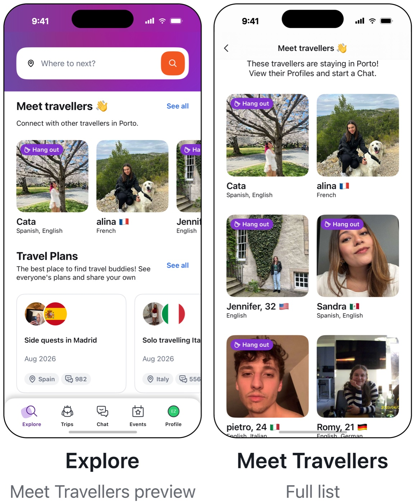
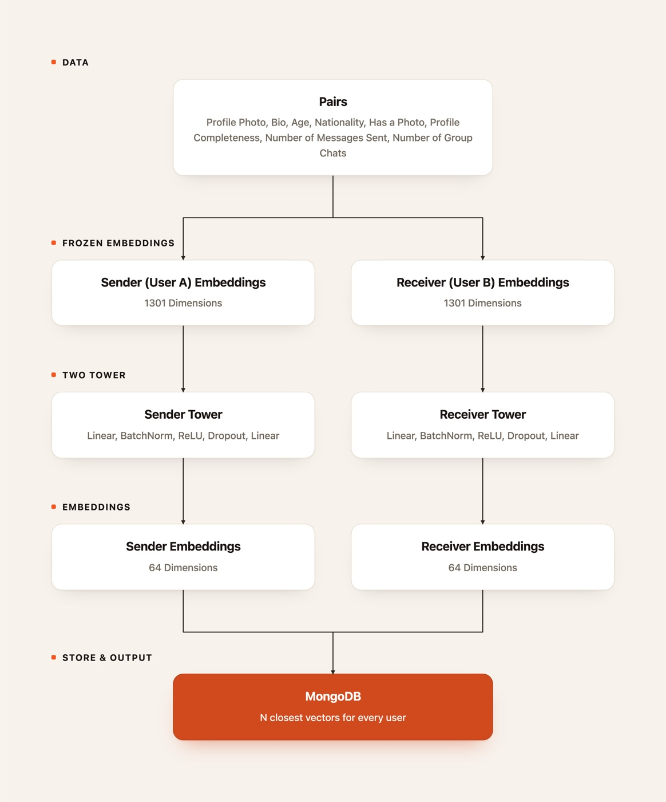

Meet Travellers Version 3
Recommendation + Ranking Architecture
Hostelworld
2026
Machine Learning Intern
Hostelworld is the leading online travel booking platform specialized in hostels and budget-friendly accommodations around the world and connecting solo travellers. The previous Meet Travellers Version 2 feature helps recommends travellers to users based on standard cosine similarity search on background information. I expanded the recommendation system by incorporating image embeddings and personality-based signals, capturing behavioral characteristics such as extraversion alongside visual preferences and aesthetics. This work explored how visual and personality signals can better understand traveller compatibility to surface more relevant social connections and improved Hit@5 for direct messages by 57%.
Challenge
Meet Travellers Version 2 recommended travellers using standard cosine similarity search on background information alone. This approach missed the visual and personality-based signals that shape real compatibility between travellers, with a 13% accuracy at Hit@5 for direct messages.

Approach
I expanded the recommendation system by incorporating image embeddings alongside personality-based signals, capturing behavioral characteristics like extraversion in addition to visual preferences and aesthetics. Specific words related to gender and lifestyle revealed a strong effect size. The model was trained on approximately 600K direct messages and evaluated on a held-out set of approximately 150K messages.

Solution
The result is a two-tower recommendation architecture that matches visual and personality signals between a sender and a receiver to better model traveller compatibility. The architecture integrates MongoDB vector search to enable real-time candidate retrieval, surfacing relevant matches immediately when users open the app.
Outcome
This implemented improved direct messages with improvements of Hit@5 by 57% and Hit@10 by 60%. The architecture is also designed to enable Meet Travellers Version 4 to improve responsiveness and meaningful conversation signals.